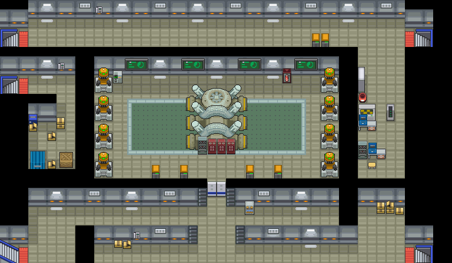
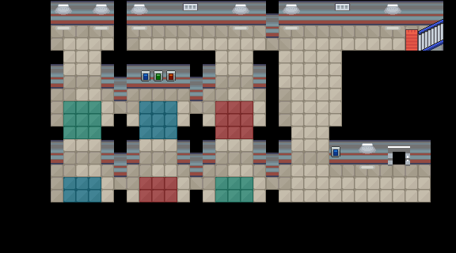
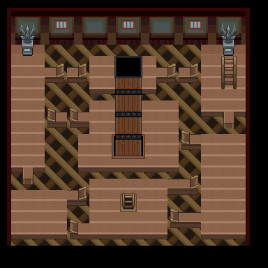

万灵药
喷雾药剂。
获取：训练师之塔·商店 ／ 浅红市·商店 ／ 红莲岛·商店 ／ 山吹市·商店 ／ 烟墨市·商店 ／ 石英高原·商店 ／ 吉野市·商店 ／ 桔梗市·商店 ／ …等 30 处
用途
喷雾药剂。 解除1只宝可梦的所有异常状态。
标价 400 口袋：道具
获取方式
购买
- 训练师之塔（区域179） · 标价 400 · 地图｜静态图 · 触发条件待补
- 浅红市（区域95） · 标价 400 · 地图｜静态图 · 触发条件待补
- 红莲岛（区域96） · 标价 400 · 地图｜静态图 · 触发条件待补
- 山吹市（区域98） · 标价 400 · 地图｜静态图 · 触发条件待补
- 烟墨市（区域152） · 标价 400 · 地图｜静态图 · 触发条件待补
- 石英高原（区域97） · 标价 400 · 地图｜静态图 · 触发条件待补
- 吉野市（区域144） · 标价 400 · 地图｜静态图 · 触发条件待补
- 桔梗市（区域145） · 标价 400 · 地图｜静态图 · 触发条件待补
- 桧皮镇（区域146） · 标价 400 · 地图｜静态图 · 触发条件待补
- 缘朱市（区域148） · 标价 400 · 地图｜静态图 · 触发条件待补
- 浅葱市（区域149） · 标价 400 · 地图｜静态图 · 触发条件待补
- 烟墨市（区域152） · 标价 400 · 地图｜静态图 · 触发条件待补
- 石英高原（区域97） · 标价 400 · 地图｜静态图 · 触发条件待补
- 吉野市（区域144） · 标价 400 · 地图｜静态图 · 触发条件待补
- 桔梗市（区域145） · 标价 400 · 地图｜静态图 · 触发条件待补
- 桧皮镇（区域146） · 标价 400 · 地图｜静态图 · 触发条件待补
- 缘朱市（区域148） · 标价 400 · 地图｜静态图 · 触发条件待补
- 浅葱市（区域149） · 标价 400 · 地图｜静态图 · 触发条件待补
- 烟墨市（区域152） · 标价 400 · 地图｜静态图 · 触发条件待补
- 石英高原（区域97） · 标价 400 · 地图｜静态图 · 触发条件待补
- 吉野市（区域144） · 标价 400 · 地图｜静态图 · 触发条件待补
- 桔梗市（区域145） · 标价 400 · 地图｜静态图 · 触发条件待补
- 桧皮镇（区域146） · 标价 400 · 地图｜静态图 · 触发条件待补
- 缘朱市（区域148） · 标价 400 · 地图｜静态图 · 触发条件待补
- 浅葱市（区域149） · 标价 400 · 地图｜静态图 · 触发条件待补
- 烟墨市（区域152） · 标价 400 · 地图｜静态图 · 触发条件待补
- 石英高原（区域97） · 标价 400 · 地图｜静态图 · 触发条件待补
- 吉野市（区域144） · 标价 400 · 地图｜静态图 · 触发条件待补
- 桔梗市（区域145） · 标价 400 · 地图｜静态图 · 触发条件待补
- 桧皮镇（区域146） · 标价 400 · 地图｜静态图 · 触发条件待补
- 缘朱市（区域148） · 标价 400 · 地图｜静态图 · 触发条件待补
- 浅葱市（区域149） · 标价 400 · 地图｜静态图 · 触发条件待补
- 桧皮镇（区域146） · 标价 400 · 地图｜静态图 · 触发条件待补
- 城都矿山（区域214） · 标价 400 · 地图｜静态图 · 触发条件待补
- 湛蓝市（区域150） · 标价 400 · 地图｜静态图 · 触发条件待补
- 满金市（区域147） · 标价 400 · 地图｜静态图 · 触发条件待补
- 满金市（区域147） · 标价 400 · 地图｜静态图 · 触发条件待补
- 满金市（区域147） · 标价 400 · 地图｜静态图 · 触发条件待补
- 满金市（区域147） · 标价 400 · 地图｜静态图 · 触发条件待补
地面隐藏
- 桐树林（区域182） · (27,8) · 数量 1 · 地图｜静态图
- 自然公园（区域178） · (5,8) · 数量 1 · 地图｜静态图
- 自然公园（区域178） · (15,50) · 数量 1 · 地图｜静态图
- 桧皮镇（区域146） · (32,16) · 数量 1 · 地图｜静态图
- 浅葱市（区域149） · (31,20) · 数量 1 · 地图｜静态图
- 擂钵山（区域99） · (9,9) · 数量 1 · 地图｜静态图
- 火箭队基地（区域133） · (12,26) · 数量 1 · 地图｜静态图
人物剧情
- 阿露福遗迹（区域134） · (30,15) · 与坐标处人物交互 · 数量 1 · 地图｜静态图 · 触发条件待补
- 漩涡岛（区域176） · (27,11) · 与坐标处人物交互 · 数量 1 · 地图｜静态图 · 触发条件待补
- 满金市（区域147） · (10,2) · 与坐标处人物交互 · 数量 1 · 地图｜静态图 · 触发条件待补
- 铃铛塔（区域135） · (2,19) · 与坐标处人物交互 · 数量 1 · 地图｜静态图 · 触发条件待补
- 铃铛塔（区域135） · (2,6) · 与坐标处人物交互 · 数量 1 · 地图｜静态图 · 触发条件待补
- 黑暗洞穴（区域177） · (48,40) · 与坐标处人物交互 · 数量 1 · 地图｜静态图 · 触发条件待补
- 擂钵山（区域99） · (38,42) · 与坐标处人物交互 · 数量 1 · 地图｜静态图 · 触发条件待补
- 寂静之丘（区域212） · (28,9) · 与坐标处人物交互 · 数量 1 · 地图｜静态图 · 触发条件待补
- 冰天地（区域181） · (13,14) · 与坐标处人物交互 · 数量 1 · 地图｜静态图 · 触发条件待补
数据来源
- 来源文档：out/items.json（
/23） - 表索引 index 0023；内嵌 itemId 23；口袋 ITEMS (id=1)；type 1；hold_effect 0/0；importance 0；unk19 0
- 获取来源文档：encounters_research/out/shops.json、maps_research/out/events/events.json、maps_research/out/scripts/scripts.json
- 获取记录 ID：
shop:081649A8:6:2:10、shop:0816D509:4:11:1、shop:0816EA38:4:12:7、shop:0816EFCB:3:14:5、shop:089C7965:14:31:2、shop:089C7965:14:34:3、shop:089C7965:14:45:1、shop:089C7965:14:46:3、shop:089C7965:14:47:4、shop:089C7965:14:48:7、shop:089C7965:14:49:11、shop:089C7970:13:31:2、shop:089C7970:13:34:3、shop:089C7970:13:45:1、shop:089C7970:13:46:3、shop:089C7970:13:47:4、shop:089C7970:13:48:7、shop:089C7970:13:49:11、shop:089C797B:12:31:2、shop:089C797B:12:34:3、shop:089C797B:12:45:1、shop:089C797B:12:46:3、shop:089C797B:12:47:4、shop:089C797B:12:48:7、shop:089C797B:12:49:11、shop:089C7986:12:31:2、shop:089C7986:12:34:3、shop:089C7986:12:45:1、shop:089C7986:12:46:3、shop:089C7986:12:47:4、shop:089C7986:12:48:7、shop:089C7986:12:49:11、shop:08171CC4:5:35:7、shop:08171E7C:4:37:4、shop:089DA538:3:49:4、shop:089EB937:14:50:16、shop:089EB942:13:50:16、shop:089EB94D:12:50:16、shop:089EB958:12:50:16、hidden:1:121:8、hidden:1:124:1、hidden:1:124:2、hidden:3:69:7、hidden:3:72:10、hidden:55:10:0、hidden:56:45:5、script_item_candidate:std:081BE897:1:50、script_item_candidate:std:081BED1C:1:109、script_item_candidate:std:087BB9EA:56:77、script_item_candidate:std:087BD269:55:19、script_item_candidate:std:087BD8E1:55:22、script_item_candidate:std:089E36A1:1:125、script_item_candidate:std:08D55CFC:55:11、script_item_candidate:std:08EC4E04:1:103、script_item_candidate:std:08F4EDB2:53:6 - 说明文字解码来源：
reference/SAVE_HOME_GAME_DATA.json.charmap
地点地图
共享RGB底图；点击可缩放定位。数字对应本页相关地点，不代表地图上全部事件。


展开其余 24 张地点地图
吉野市

1 万灵药（1,5）
桔梗市

1 万灵药（1,5）
桧皮镇

1 万灵药（1,5）
缘朱市

1 万灵药（1,5）
浅葱市

1 万灵药（1,5）
桧皮镇

1 万灵药（2,3）
城都矿山
1 万灵药（10,5）
湛蓝市

1 万灵药（6,3）
满金市

1 万灵药（22,6）
桐树林


1 万灵药（27,8）
自然公园

1 万灵药（5,8）；2 万灵药（15,50）
桧皮镇


1 万灵药（32,16）
浅葱市


1 万灵药（31,20）
擂钵山

1 万灵药（9,9）
火箭队基地

1 万灵药（12,26） 底图有8个图块缺少原始数据。
阿露福遗迹

1 万灵药（30,15）
漩涡岛

1 万灵药（27,11）
满金市

1 万灵药（10,2）
铃铛塔

1 万灵药（2,19）
铃铛塔

1 万灵药（2,6）
黑暗洞穴

1 万灵药（48,40）
擂钵山

1 万灵药（38,42）
寂静之丘

1 万灵药（28,9）
冰天地

1 万灵药（13,14）